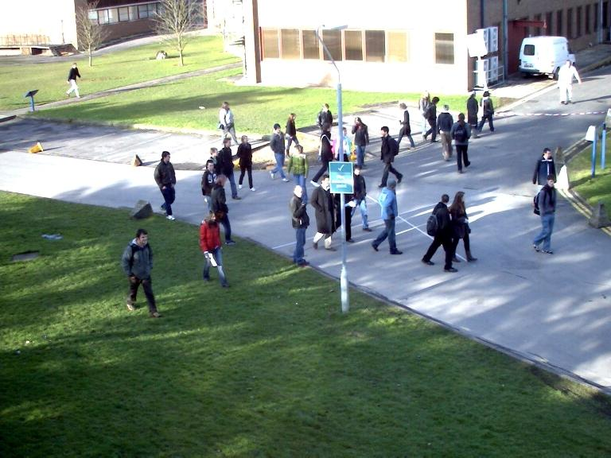
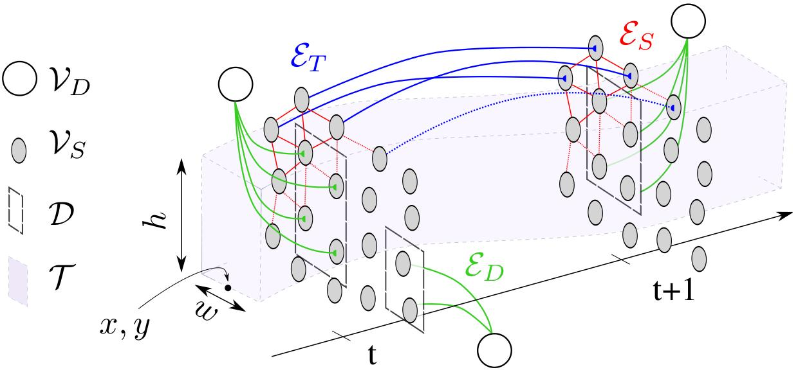
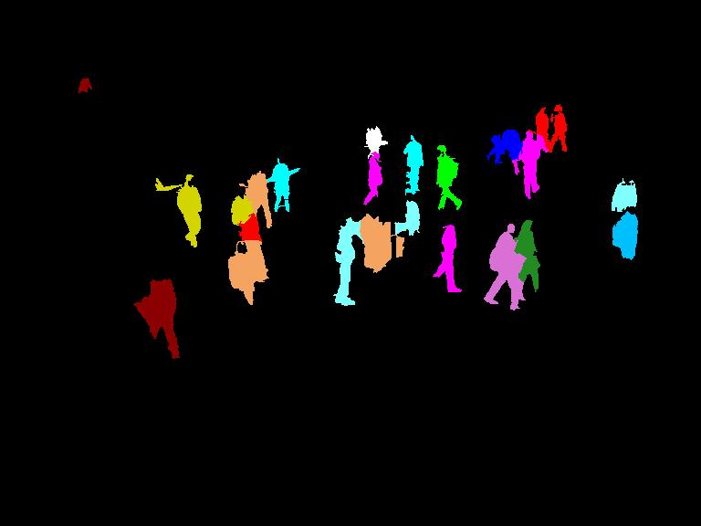

Joint Tracking and Segmentation of Multiple Targets



Abstract
Tracking-by-detection has proven to be the most successful strategy to address the task of tracking multiple targets in
unconstrained scenarios. Traditionally, a
set of sparse detections, generated in a preprocessing step,
serves as input to a high-level tracker whose goal is to correctly associate these “dots” over time. An obvious shortcoming of this approach is that most information available
in image sequences is simply ignored by thresholding weak
detection responses and applying non-maximum suppression. We propose a multi-target tracker that exploits low
level image information and associates every (super)-pixel
to a specific target or classifies it as background. As a result, we obtain a video segmentation in addition to the classical bounding-box representation in unconstrained, realworld videos. Our method shows encouraging results on
many standard benchmark sequences and significantly outperforms state-of-the-art tracking-by-detection approaches
in crowded scenes with long-term partial occlusions.
References
Joint Tracking and Segmentation of Multiple Targets
A. Milan,
L. Leal-Taixé,
K. Schindler and
I. Reid
CVPR 2015
bibtex |
paper |
video

@inproceedings{Milan:2015:CVPR,
Author = {Anton Milan and Laura Leal-Taixé and Konrad Schindler and Ian Reid},
Booktitle = {CVPR},
Title = {Joint Tracking and Segmentation of Multiple Targets},
Year = {2015}
}
Code
Detections
You can download the same detector output that we used for our tracker from here.
Tracking output
Here is the output of the evaluation script and more detailed results than present in the paper.